August 2025 (version 1.104)
Release date: September 11, 2025
Downloads: Windows: x64 Arm64 | Mac: Universal Intel silicon | Linux: deb rpm tarball Arm snap
Welcome to the August 2025 release of LTSerialTool. There are many updates in this version that we hope you'll like, some of the key highlights include:
-
Model flexibility
- Let VS Code select the best model (Show more)
- Contribute models through VS Code extensions (Show more)
-
Security
- Confirm edits for sensitive files (Show more)
- Let agents run terminal commands safely (Show more)
-
Productivity
- Remove distractions from chat file edits (Show more)
- Use AGENTS.md to add chat context (Show more)
If you'd like to read these release notes online, go to Updates on code.visualstudio.com.
Insiders: Want to try new features as soon as possible?
You can download the nightly Insiders build and try the latest updates as soon as they are available.
Download Insiders
Chat
Auto model selection (Preview)
This iteration, we're introducing auto model selection in chat. When you choose the Auto model in the model picker, VS Code automatically selects a model to ensure that you get the optimal performance and reduce rate limits.
Auto model selection is currently in preview and we are rolling it out to all GitHub Copilot users in VS Code in the following weeks, starting with the individual Copilot plans.
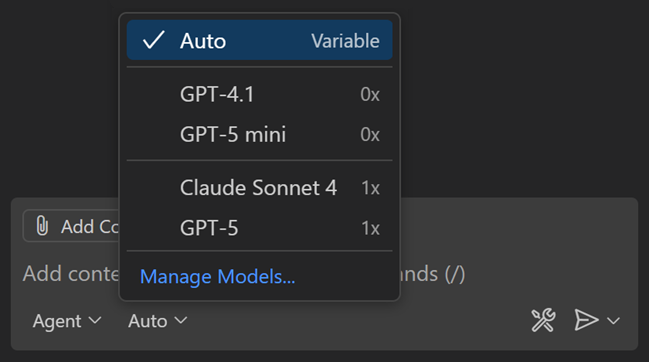
Auto will choose between Claude Sonnet 4, GPT-5, GPT-5 mini, and GPT-4.1, unless your organization has disabled access to these models. When using auto model selection, VS Code uses a variable model multiplier, based on the selected model. If you are a paid user, auto will apply a 10% request discount.
You can view the selected model and the model multiplier by hovering over the response in the Chat view.
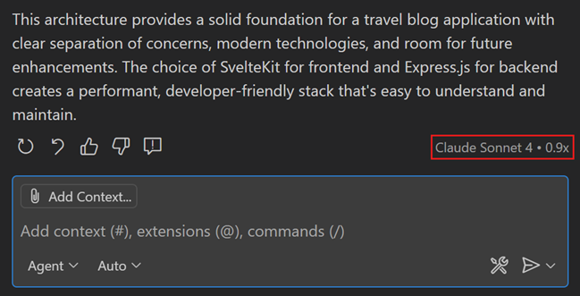
Learn more about auto model selection in VS Code.
Confirm edits to sensitive files
Setting: chat.tools.edits.autoApprove
In agent mode, the agent can autonomously make edits to files in your workspace. This might include accidentally or maliciously modifying or deleting important files such as configuration files, which could cause immediate negative side-effects on your machine. Learn more about security considerations when using AI-powered development tools.
In this release, the agent now explicitly asks for user confirmation before making edits to certain files. This provides an additional layer of safety when using agent mode. With the chat.tools.edits.autoApprove setting, you can configure file patterns to indicate which files require confirmation.
Common system folders, dotfiles, and files outside your workspace will require confirmation by default.
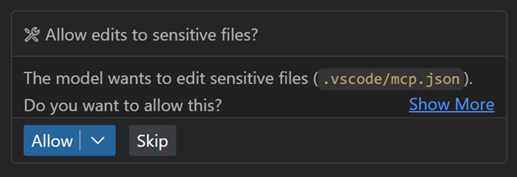
Support for AGENTS.md files (Experimental)
Setting: chat.useAgentsMdFile
An AGENTS.md file lets you provide context and instructions to the agent. Starting from this release, when you have an AGENTS.md file in your workspace root(s), it is automatically picked up as context for chat requests. This can be useful for teams that use multiple AI agents.
Support for AGENTS.md files is enabled by default and can be controlled with the chat.useAgentsMdFile setting. See https://agents.md/ for more information about AGENTS.md files.
Learn more about customizing chat in VS Code to your practices and team workflows.
Improved changed files experience
This iteration, the changed files list has been reworked with several quality-of-life features. These changes should improve your experience when working in agent mode!
-
The list of changed files is now collapsed by default to give more space to the chat conversation. While collapsed, you can still see the files changed count and the lines added or removed.
-
When you keep or accept a suggested change, the file is removed from the files changed list.
-
When you stage or commit a file using the Source Control view, this automatically accepts the proposed file changes.
-
Changes per file (lines added or removed) are now shown for each item in the list.
Use custom chat modes in prompt files
Prompt files are Markdown files in which you write reusable chat prompts. To run a prompt file, type / followed by the prompt file name in the chat input field, or use the Play button when you have the prompt file open in the editor.
You can specify which chat mode should be used for running the prompt file. Previously, you could only use built-in chat modes like agent, edit, or ask in your prompt files. Now, you can also reference custom chat modes in your prompt files.
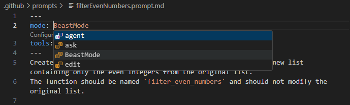
Learn more about customizing chat in VS Code with prompt files, chat modes, and custom instructions.
Configure prompt file suggestions (Experimental)
Setting: chat.promptFilesRecommendations
Teams often create custom prompt files to standardize AI workflows, but these prompts can be hard to discover when users need them most. You can now configure which prompt files appear as suggestions in the Chat welcome view based on contextual conditions.
The new chat.promptFilesRecommendations setting supports both simple boolean values and when-clause expressions for context-aware suggestions.
{
"chat.promptFilesRecommendations": {
"plan": true, // Always suggest
"a11y-audit": "resourceExtname == .html", // Only for HTML files
"document": "resourceLangId == markdown", // Only for Markdown files
"debug": false // Never suggest
}
}
This helps teams surface the right AI workflows at the right time, making custom prompts more discoverable and relevant to your workspace and file type.
Select tools in tool sets
Tool sets are a convenient way to group related tools together and VS Code has several built-in tool sets like edit or search.
The tools picker now shows which tools are part of each tool set and you can individually enable or disable each tool. You can access the tools picker via the Configure Tools... button in the Chat view.
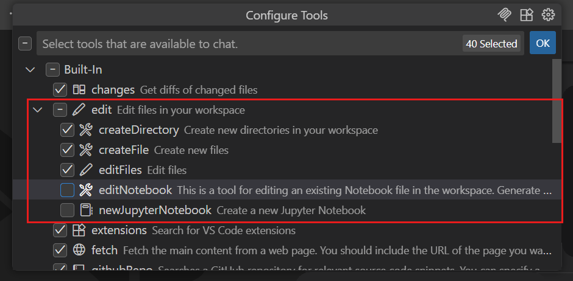
Configure font used in chat
Settings: chat.fontFamily, chat.fontSize
VS Code lets you choose which font to use across the editor, however the Chat view lacked that configurability. We have now added two new settings for configuring the font family (chat.fontFamily) and font size (chat.fontSize) of chat messages.
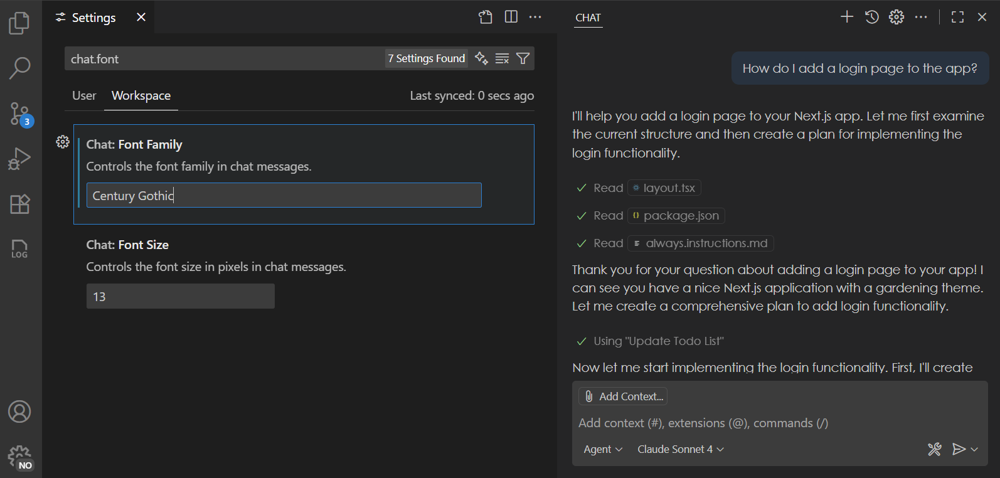
Note: content for lists currently does not yet honor these settings, but this is something that we are working on fixing in the upcoming releases.
Collaborate with coding agents (Experimental)
With coding agents, you delegate tasks to AI agents to be worked on in the background. You can have multiple such agents work in parallel. We're continuing to evolve the chat sessions experience to help you collaborate more effectively with coding agents.
Chat Sessions view
Setting: chat.agentSessionsViewLocation
The Chat Sessions view provides a single, unified view for managing both local and contributed chat sessions. We've significantly enhanced the Chat Sessions view where you can now perform all key operations, making it easier to iterate and finalize your coding tasks.
- Status Bar tracking: Monitor progress across multiple coding agents directly from the Status Bar.
- Multi-session support: Launch and manage multiple chat sessions from the same view.
- Expanded context menus: Access more actions to interact with your coding agents efficiently.
- Rich descriptions: With rich description enabled, each list entry now includes detailed context to help you quickly find relevant information.
GitHub coding agent integration
We've improved the integration of GitHub coding agents with chat sessions to deliver a smoother, more intuitive experience.
- Chat editor actions: Easily view or apply code changes, and check out pull requests directly from the chat editor.
- Seamless transitions: Move from local chats to GitHub agent tasks with improved continuity.
- Better session rendering: Various improvements on cards and tools rendering for better visual clarity.
- Performance boosts: Faster session loading for a more responsive experience.
Delegate to coding agent
We continued to expand on ways to delegate local tasks in VS Code to a Copilot coding agent:
-
Fix todos with coding agent:
Comments starting with
TODOnow show a Code Action to quickly initiate a coding agent session.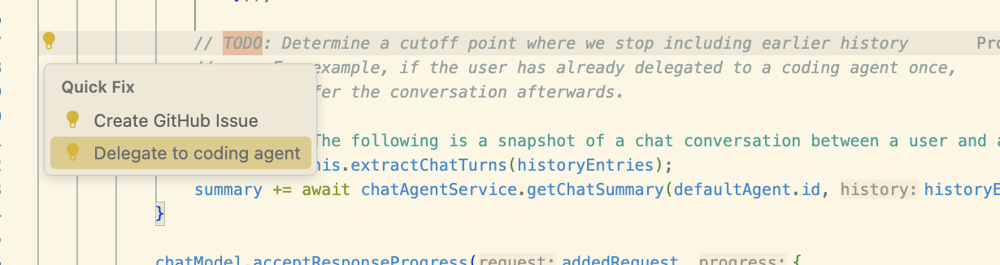
-
Delegate from chat (githubPullRequests.codingAgent.uiIntegration):
Additional context, including file references, are now forwarded to GitHub coding agent when you perform the Delegate to coding agent action in chat. This enables you to precisely plan out a task before handing it off to coding agent to complete it. A new chat editor is opened with the coding agent's progress shown in real-time.
Theme: Sharp Solarized (preview on vscode.dev)
Social sign in with Google
The option to sign in or sign up to GitHub Copilot with a Google account is now generally available and rolling out to all users in VS Code.
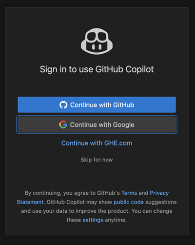
You can find more information about this in the announcement GitHub blog post.
Terminal auto approve
Setting: chat.tools.terminal.enableAutoApprove
Automatically approving terminal commands can greatly streamline agent interactions, but it also comes with security risks. This release introduces several improvements to terminal auto approve to enhance both usability and security.
-
You can now enable or disable terminal auto approve with the chat.tools.terminal.enableAutoApprove setting. This setting can also be set by organizations via device management.
-
Before terminal auto approve is actually enabled, you need to explicitly opt in via a dropdown in the Chat view.
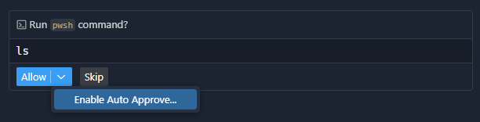
-
From the Chat view, you can conveniently add auto-approve rules for the command being run, or open the configuration setting:
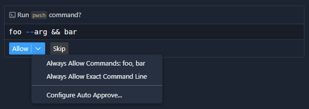
Theme: Sapphire (preview on vscode.dev)
This has some basic support for commands to suggest sub-commands where they would be more appropriate, such as suggesting an
npm testrule rather thannpm. -
To improve transparency around auto-approved commands, we show which rule was applied in the Chat view, also enabling you to configure that rule:
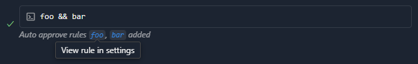
-
We improved the defaults to provide safety and reduce noise. You can see the full list of rules by viewing the setting's default value by opening your
settings.jsonfile, then enteringchat.tools.terminal.autoApproveand completing it via Tab. -
Non-regex rules that contain a backslash or forward slash character are now treated as a path and not only approve that exact path, but also allow either slash type and also a
./prefix. When using PowerShell, all rules are forced to be case insensitive. -
When agent mode wants to pull content from the internet using
curl,wget,Invoke-RestMethod, orInvoke-WebRequest, we now show a warning, as this is a common vector for prompt injection attacks.
Learn more about terminal auto approve in our documentation.
Global auto approve
Global auto approve has been an experimental setting since v1.99. What we have observed is that users have been enabling this setting without thinking deeply enough about the consequences. Additionally, some users thought that enabling the chat.tools.autoApprove setting was a prerequisite to enabling terminal auto approve, which was never the case.
To combat these misconceptions and to further protect our users, there is now a deservedly scary-looking warning the first time global auto approve attempts to be used, so the user can easily back out and disable the setting:
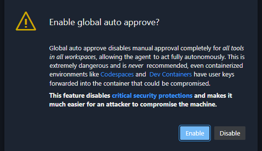
The setting has also been changed to the clearer chat.tools.global.autoApprove without any automatic migration, so all users (accidental or intentional) need to go and explicitly set it again.
Math rendering enabled by default
Setting: chat.math.enabled
Rendering of mathematical equations in chat responses is now generally available and enabled by default. You can disable this functionality with the chat.math.enabled setting.
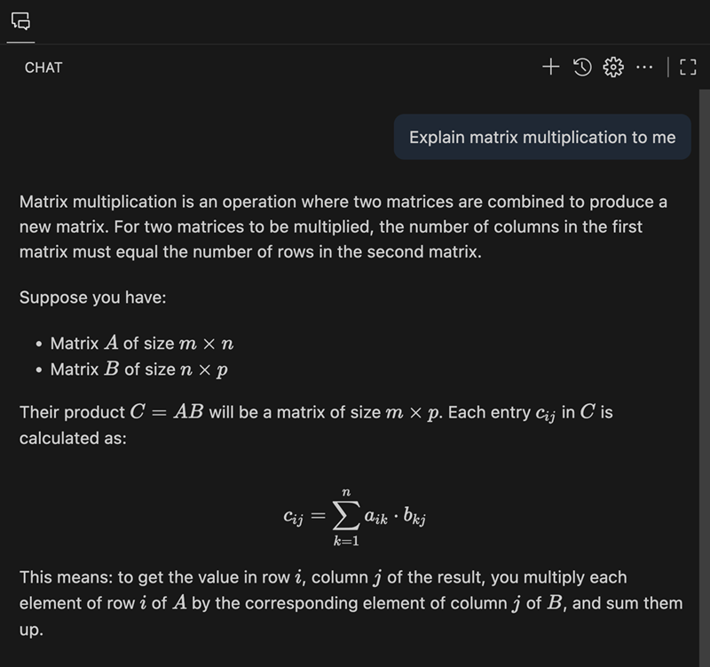
This feature is powered by KaTeX and supports both inline and block math equations. Inline math equations can be written by wrapping the markup in single dollar signs ($...$), while block math equations use two dollar signs ($$...$$).
Chat view default visibility
Setting: workbench.secondarySideBar.defaultVisibility
When you first open a workspace, the Secondary Side Bar with the Chat view is visible by default, inviting you to ask questions or start an agentic session right away. You can configure this behavior with the workbench.secondarySideBar.defaultVisibility setting or by using the dropdown of the Chat view itself:
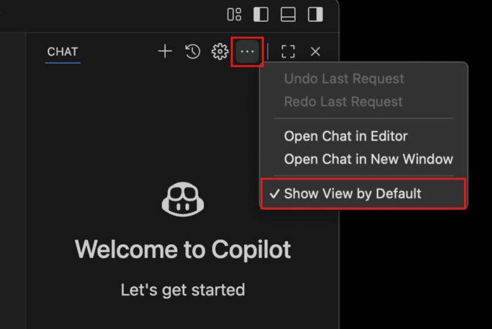
Improved task support
-
Input request detection
When you run a task or terminal command in agent mode, the agent now detects when the process requests user input, and you're prompted to respond in chat. If you type in the terminal while a prompt is present, the prompt will hide automatically. When options and descriptions are provided (such as
[Y] Yes [N] No), these are surfaced in the confirmation prompt. -
Error detection for tasks with problem matchers
For tasks that use problem matchers, the agent now collects and surfaces errors based on the problem matcher results, rather than relying on the language model to evaluate output. Problems are presented in a dropdown within the chat progress message, allowing you to navigate directly to the problem location. This ensures that errors are reported only when relevant to the current task execution.
-
Compound task support
Agent mode now supports running compound tasks. When you run a compound task, the agent indicates progress and output for each dependent task, including any prompts for user input. This enables more complex workflows and better visibility into multi-step task execution.
In the example below, the VS Code - Build task is run. Output is assessed for each dependency task and a problem is surfaced to the user in the response and in the progress message dropdown.
Improved terminal support
-
Moved more terminal tools to core
Like the
runInTerminaltool last release, theterminalSelectionandterminalLastCommandtools have been moved from the extension to core, which should provide general reliability improvements. -
Configurable terminal tool shell integration timeout
Whenever the
runInTerminaltool tries to create a terminal, it waits a period for shell integration to activate. If your shell is especially slow to start up, say you have a very heavy PowerShell profile, this could cause it to wait the previously fixed 5-second timeout and still end up failing in the end. This timeout is now configurable via the chat.tools.terminal.shellIntegrationTimeout setting. -
Prevent Command Prompt usage
Since shell integration isn't really possible in Command Prompt, at least with the capabilities that Copilot needs, Copilot now opts to use Windows PowerShell instead, which should have shell integration by default. This should improve the reliability of the
runInTerminaltool when your default shell is Command Prompt.If, for some reason, you want Copilot to use Command Prompt, this is currently not possible. We will likely be adding the ability to customize the terminal profile used by Copilot soon, which is tracked in #253945.
Todo List tool
The todo list tool helps agents break down complex multi-step tasks into smaller tasks and report progress to help you track individual items. We've made improvements to this tool, which is now enabled by default.
Tool progress is displayed in the Todo control at the top of the Chat view, which automatically collapses as the todo list is worked through and shows only the current task in progress.
Skip tool calls
When the agent requests confirmation for a tool call, you can now choose to skip the tool call and let the agent continue. You can still cancel the request or enter a new request via the chat input box.
Improvements to semantic workspace search
We've upgraded the #codebase tool to use a new embeddings model for semantic searching for code in your workspace. This new model provides better results for code searches. The new embeddings also use less storage space, requiring only 6% of our previous model's on-disk storage size for each embedding.
We'll be gradually rolling out this new embeddings model over the next few weeks. Your workspace will be automatically updated to use this new embeddings model, so no action is required. VS Code Insiders is already using the new model if you want to try it out before it rolls out to you.
Hide and disable GitHub Copilot AI features
Setting: chat.disableAIFeatures
We are introducing a new setting chat.disableAIFeatures for disabling and hiding built-in AI features provided by GitHub Copilot, including chat, code completions, and next edit suggestions.
The setting has the following advantages over the previous solution we had in place:
- Syncs across your devices unless you disable this explicitly
- Disables the Copilot extensions in case they are installed
- Configure the setting per-profile or per-workspace, making it easy to disable AI features selectively
The command to "Hide AI Features" was renamed to reflect this change and will now reveal this new setting in the settings editor.
Note: users that were hiding AI features previously will continue to see AI features hidden. You can update the setting in addition if you want to synchronize your choice across devices.
MCP
Support for server instructions
VS Code now reads MCP server instructions and will include them in its base prompt.
MCP auto discovery disabled by default
Setting: chat.mcp.discovery.enabled
VS Code supports automatic discovery of MCP servers installed in other apps like Claude Code. As MCP support has matured in VS Code, auto-discovery is now disabled by default, but you can re-enable it using the chat.mcp.discovery.enabled setting.
Enable MCP
Setting: chat.mcp.access
The chat.mcp.enabled setting that previously controlled whether MCP servers could run in VS Code has been migrated to a new chat.mcp.access setting with more descriptive options:
all: allow all MCP servers to run (equivalent to the previoustruevalue)none: disable MCP support entirely (equivalent to the previousfalsevalue)
Accessibility
Focus chat confirmation action
We've added a command, Focus Chat Confirmation (kb(workbench.action.chat.focusConfirmation)), which focuses the confirmation dialog, if present, or announces to screen reader users that confirmation is not required.
Code Editing
Configurable inline suggestion delay
Setting: editor.inlineSuggest.minShowDelay
A new setting editor.inlineSuggest.minShowDelay enables you to configure how quickly inline suggestions can appear after you type. This can be useful if you find that suggestions are appearing too quickly and getting in the way of your typing.
Editor Experience
Window border color support on Windows
Setting: window.border
We are happy to add a new setting window.border on Windows that enables you to show a colored border around the VS Code window. The setting has the following options:
default: respect color theme settings, fallback to Windows settingssystem: respect Windows settings only (window title accent color)off: disable border colors<color>: specific color in Hex, RGB, RGBA, HSL, HSLA format
You can configure colors per workspace, making it easier to distinguish which workspace is opened in which window.
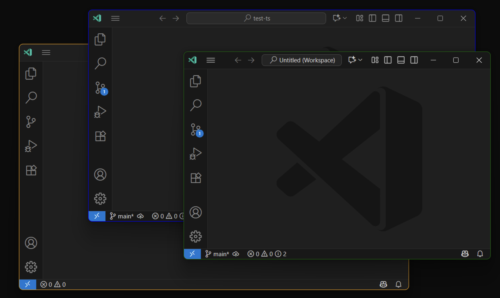
When you configure window.border as default, a theme is able to set the border color for active and inactive windows using the window.activeBorder and window.inactiveBorder color keys. You can further override these colors from the workbench.colorCustomizations setting.
Manage extension account preference
We've added an Accounts: Manage Extension Account Preferences command to the Command Palette. When invoked, it shows a list of extensions that have access to authentication accounts and lets you change the account that those extensions use. You are even able to sign in to a new account right from the list.
This builds on the account management functionality that we added a year ago.
Editor tab index
Setting: workbench.editor.showTabIndex
You can now render the index of an editor tab in the tab's label. This can be helpful when you have many tabs open and want to quickly navigate between them using keyboard shortcuts. Enable this functionality with the workbench.editor.showTabIndex setting.
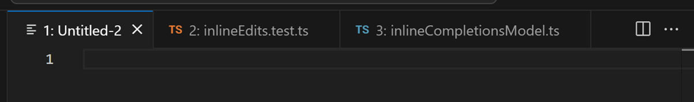
Editor tab bar scrollbar visibility
Setting: workbench.editor.titleScrollbarVisibility
The workbench.editor.titleScrollbarVisibility enables you to control when the scrollbar in the editor tab bar is visible. The default value auto shows the scrollbar only when the tabs overflow and a tab is hovered. You can also set it to visible to always show the scrollbar when the tabs overflow, or hidden to never show it.
Issue reporter improvements
When reporting issues in VS Code or extensions via the built-in issue reporter, you can now choose either Create on GitHub or Preview on GitHub via a dropdown on the report button. If the button does not populate a dropdown and only shows Create or Preview, this likely means that you are still loading extension data or need to ensure that you are signed in with a GitHub account that provides the correct scopes.
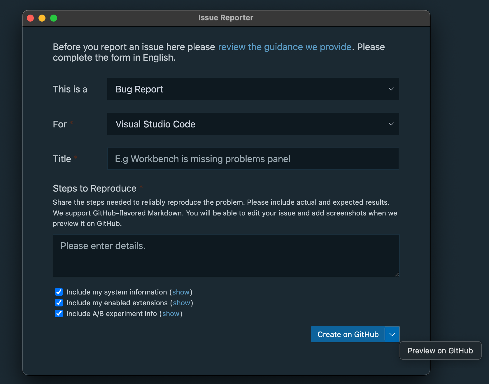
Notebooks
Improved NES suggestions (Experimental)
Setting: github.copilot.chat.notebook.enhancedNextEditSuggestions.enabled
We are experimenting with improving the quality of next edit suggestions for notebooks. Currently, the language model has access to the contents of the active cell when generating suggestions. With the github.copilot.chat.notebook.enhancedNextEditSuggestions.enabled setting enabled, the language model has access to the entire notebook, enabling it to generate more accurate and higher-quality next edit suggestions.
Source Control
Preview and migrate Git worktree changes
You can now preview differences between worktree files and your current workspace by right-clicking on a worktree file to open the context menu in the Source Control Changes view and selecting Compare with Workspace.
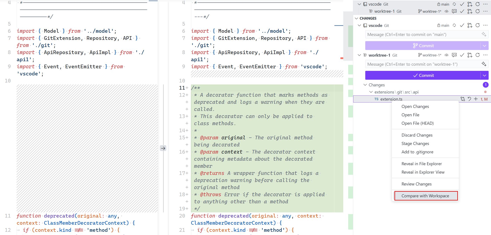
After reviewing your changes, you can use the Migrate Worktree Changes... command from the Command Palette () to merge all changes from a worktree into your current workspace. This makes it easy to work across multiple worktrees and selectively bring changes back into your main repository.
Learn more about Git worktrees in VS Code.
Terminal
Terminal window discoverability and polish
A common request is to allow terminals to be opened in separate windows. This functionality has existed for about one and a half years, but it has not been particularly discoverable. This iteration, we added multiple entry points for this functionality:
- The new command ⌃⇧⌥` (Windows, Linux Ctrl+Shift+Alt+`).
- The empty editor and tab well menus now have a New Terminal entry.
- The new terminal dropdown has been shuffled around and now has a New Terminal Window entry.
- The top-level terminal menu now has a New Terminal Window entry.
We also polished the experience where these new terminal windows open in compact mode. If you add a new tab to the window, it automatically exits compact mode.
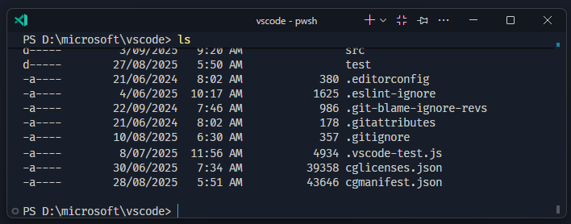
Terminal actions in terminal editors
The actions that are available in the terminal view (new terminal dropdown, clear terminal, etc.) are now also available for terminals in the editor area and terminal windows.
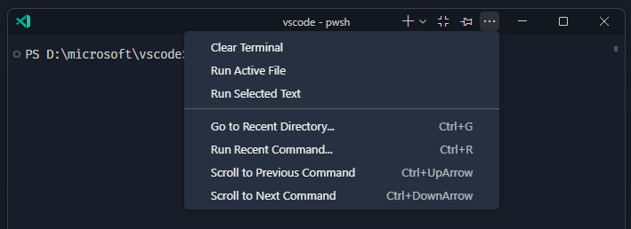
Just like in the terminal view, you can right-click the actions area to move them out of the overflow menu.
Terminal IntelliSense improvements (Preview)
Terminal IntelliSense is getting several improvements this release:
- Multiple performance improvements, these disproportionately affect the experience on Windows.
gitcompletions are now more reliable on Windows due to the removal of theseddependency, which isn't available on Windows.gitcompletions now have familiar icons to represent commits, branches, remotes, stashes, and tags. 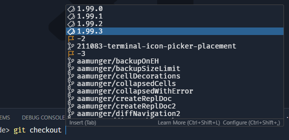- A large number of completion specs were added:
adb,basename,bundle,clear,cut,date,dd,diff,dig,dirname,docker-compose,docker,dotnet,env,export,fdisk,fmt,fold,gh,go,htop,id,jq,ln,lsblk,lsof,mount,nl,od,paste,ping,pkill,readlink,rsync,ruby,ruff,sed,seq,shred,sort,source,split,stat,su,sudo,tac,tar,tee,time,tr,traceroute,tree,truncate,uniq,unzip,wc,where,whereis,which,who,xargs,xxd,yo,zip
Terminal sticky scroll improvements
We have now enabled terminal sticky scroll by default. We have made several improvements for a better experience, such as improved behavior when using a pager. Terminal sticky scroll is now compatible with the editor.tabFocusMode setting.
Languages
JavaScript and TypeScript
After reviewing usage numbers, we decided to remove our built-in bower.json IntelliSense. Bower has been deprecated since 2017 and our built-in support had little usage and was not being actively maintained.
Bower recommends that users migrate to npm or yarn. Continued support for Bower in VS Code can be provided by extensions.
Python
Python Environments extension support for Pipenv
Pipenv environments can now be discovered and selected just like in the Python extension. In addition, they appear in the Environment Manager view in the Python sidebar, where they are grouped and displayed alongside your other environment types.
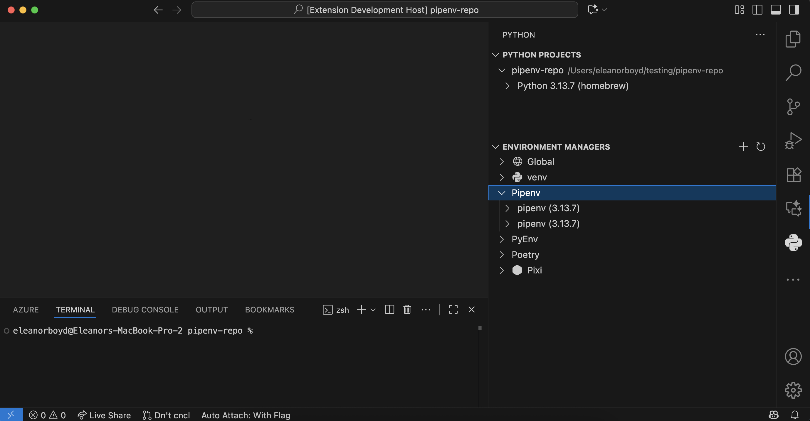
Configure environment variable injection
A new setting, python.useEnvFile, controls whether environment variables from .env files and the python.envFile setting are injected into terminals when the Python Environments extension is enabled.
Python Environments extension improvements
The Python Environments Extension continued to receive bug fixes and improvements as part of the controlled roll-out to stable users. To use the Python Environments extension during the roll-out, make sure the extension is installed and add the following to your VS Code settings.json file: "python.useEnvironmentsExtension": true.
AI-powered hover summaries with Pylance (Experimental)
A new experimental AI hover summaries feature is now available for Python when using the latest pre-release version of Pylance. When you enable the python.analysis.aiHoverSummaries setting, you can get helpful summaries on-the-fly for symbols that do not already have documentation. This makes it easier to understand unfamiliar code and boosts productivity as you explore Python projects. AI hover summaries are currently available to GitHub Copilot Pro, Pro+, and Enterprise users.
We look forward to bringing this experimental experience to the stable extension version soon.
Run code snippet tool
Instead of relying on terminal commands like python -c "code" or creating temporary files to be executed, the Pylance run code snippets tool enables GitHub Copilot to execute Python snippets entirely in memory. It automatically uses the correct Python interpreter configured for your workspace, and it eliminates common issues with shell escaping and quoting that sometimes arise during terminal execution.
One of the standout benefits is the clean, well-formatted output it provides, with both stdout and stderr interleaved for clarity. This makes it ideal when using agent mode with GitHub Copilot to test small blocks of code, run quick scripts, validate Python expressions, or check imports, all within the context of your workspace.
To try it out, make sure to use the latest pre-release version of the Pylance extension. You can then select the pylancerunCodeSnippet tool via the Add context... > Tools menu in the Chat view.
Note: As with all AI-generated code, please make sure to inspect the generated code before allowing this tool to be executed. Reviewing the logic and intent of the code ensures it aligns with your project's goals and maintains safety and correctness.
Pylance IntelliSense enabled in all Python documents
The python.analysis.supportAllPythonDocuments setting has been removed from the latest Pylance pre-release version, with Pylance IntelliSense now being enabled by default in all Python documents, including terminal and diff views. This means you can get rich code completions, hover and code navigation wherever you work with Python in VS Code.
Activation hooks
Python activation hooks can now run from shell integration scripts, instead of requiring the Python environment extension to modify your shell profile. This provides more reliable terminal activation when python-envs.terminal.autoActivationType is set to shellStartup and, importantly, ensures Copilot terminals are activated as expected.
Contributions to extensions
GitHub Pull Requests
There has been more progress on the GitHub Pull Requests extension, which enables you to work on, create, and manage pull requests and issues. New features include:
- Side Bar content collapses on narrow windows
- Pull request and issue webviews restore after reload
- The new "TODO" code action lets you delegate directly to the Copilot coding agent
- Submodules can be ignored with githubPullRequests.ignoreSubmodules
Review the changelog for the 0.118.0 release of the extension to learn about everything in the release.
Extension Authoring
shellIntegrationNonce for extension launched terminals
shellIntegrationNonce can now be passed to createTerminal in TerminalOptions and ExtensionTerminalOptions. This enables the extension to control the nonce, which is used to verify commands in shell integration escape sequences.
Language Model Chat Provider API
This iteration, we finalized the LanguageModelChatProviders API. This enables extensions to contribute one or more language models, cloud-hosted or local. By installing the extension, users can select these models through the model picker in chat.
There are already multiple extensions that take advantage of this API to extend chat in VS Code with additional models, including AI Toolkit for VS Code, Cerebras Inference, and Hugging Face.
You can learn more about how to utilize this API in our Language Model Chat Provider extension guide or in our extension sample.
Note: Models provided through this API are currently only available to users on individual GitHub Copilot plans.
Proposed APIs
Authentication: Supporting WWW-Authenticate challenges in getSession
A well-established pattern of HTTP is that a request to an API can return a 401 Unauthorized status code with a WWW-Authenticate header, which defines auth challenges. These are essentially things that the API needs in order to resolve past the 401.
We have introduced a proposed API, which allows for the passing down and handling of these challenges to authentication providers. First off, from the calling side you can now pass in a challenge like so:
export interface AuthenticationWWWAuthenticateRequest {
/**
* The raw WWW-Authenticate header value that triggered this challenge.
*/
readonly wwwAuthenticate: string;
/**
* Optional scopes for the session.
*/
readonly scopes?: readonly string[];
}
export namespace authentication {
// NOTE: The only change is the 2nd parameter, the other variations of `getSession` have the same change
export function getSession(
providerId: string,
scopeListOrRequest: ReadonlyArray<string> | AuthenticationWWWAuthenticateRequest,
options?: AuthenticationGetSessionOptions
): Thenable<AuthenticationSession | undefined>;
}
On the authentication provider side, we have added the following two new functions to AuthenticationProvider:
getSessionsFromChallenges(constraint: AuthenticationConstraint, options: AuthenticationProviderSessionOptions): Thenable<readonly AuthenticationSession[]>;
createSessionFromChallenges(constraint: AuthenticationConstraint, options: AuthenticationProviderSessionOptions): Thenable<AuthenticationSession>;
and an auth provider can declare support for challenges when registered via supportsChallenges: true in AuthenticationProviderOptions.
Example: Azure MFA
This work was initially done due to an upcoming change to require MFA in Azure APIs so let's also use that as an example of this API.
Let's say you have an extension that creates a resource in Azure. All that's doing is calling an Azure RM API, nothing fancy... Your extension is probably already familiar with calling vscode.authentication.getSession to get an authentication session, mainly an access token, that can be used to call this API. Now, when you first minted that authentication session, depending on your organization, you may or may NOT have gone through multifactor authentication (MFA). If you did, then the Azure API will be happy. If you didn't go through MFA, then Azure's API will return a 401 and a WWW-Authenticate header.
Now comes our new API in VS Code... all you have to do is take that header value, and pass it right in to vscode.authentication.getSession:
const newRequest = {
wwwAuthenticate: theRawHeaderValue,
scopes: scopesFromPreviousRequest
};
const sessionWithMFA = await vscode.authentication.getSession(
'microsoft',
newRequest,
options
);
This will pass that header value down to the microsoft auth provider, and the auth provider will be responsible for minting a session in which the challenges are satisfied.
Next steps
Next iteration we will finalize the getSession (aka extension asking for auth) parts of this proposal so if you have any feedback on that or the shape of the AuthenticationProvider changes, let us know! You can find the full proposal on GitHub here.
Another use case that will be lit up soon regarding WWW-Authenticate, is for MCP servers to issue a WWW-Authenticate header asking for a token with more scopes. There's a proposal in the MCP specification for this.
View containers in the Secondary Side Bar
Extensions can contribute view containers to the activitybar and panel. We have now added support for contributing to the secondarySidebar as well. This is currently behind the contribSecondarySideBar proposed API. We are hoping to finalize this API soon.
Engineering
Exploring Playwright and Playwright MCP in the inner development loop of VS Code
Agent mode and other AI features of VS Code have become a core tool (no pun intended) for the VS Code team to build VS Code itself. We wanted to explore how we can apply these features further to make the inner development loop of VS Code even better. To that end, we have been experimenting with extending our existing smoke test automation project, which uses Playwright, to create an MCP server that can drive a local instance of VS Code. This allows our existing agentic flows, which focused on receiving context from build/test-time artifacts (compilation, linters, tests, etc.), to now also interact with a live instance of VS Code... verifying that changes have the desired effect at runtime.
The first piece of this work can be found in the test/mcp folder of the vscode repo. If you're interested in trying it out, it's very easy to get started:
- Follow the Contribution Guidelines for getting a local version of Code OSS running
- Then you can use our trivial (for now) prompt file to ask a question
/playwright your question herein Agent mode.
This is still an early exploration, but we are excited about the possibilities this opens up for us to use AI further in our inner development loop. The ground work is now laid, and we will be iterating on this to make it more robust and useful for the team.
This work was recently featured on the VS Code Insiders podcast, where we discussed the motivations behind this exploration and some of the technical details. You can listen to the episode of the VS Code Insiders podcast.
Notable fixes
- vscode#151902 - Terminal: Copy on selection + new highlight in 1.68 copies previous term on CMD+F
- vscode#222075 - Terminal sticky scroll can show up for 1 frame when using page down in a pager
- xtermjs/xterm.js#5390 - Fix scrollbar teleport after exiting alt buffer
Thank you
Last but certainly not least, a big Thank You to the contributors of VS Code.
Issue tracking
Contributions to our issue tracking:
- @gjsjohnmurray (John Murray)
- @RedCMD (RedCMD)
- @IllusionMH (Andrii Dieiev)
- @albertosantini (Alberto Santini)
Pull Requests
Contributions to vscode:
- @a-ariff (Ariff): docs: fix grammar in Development Container section PR #264162
- @alexkozy (Alexey)
- fix: tiny memory leak in debugToolBar.ts PR #259349
- fix: register WorkerTextModelSyncClient PR #259442
- @alexvoedi (Alexander Vödisch): Fix linkedEditing desync PR #242993
- @bluedog13
- Fix OAuth redirect URI format to align with Microsoft's URL standards PR #260446
- Fix OAuth2 resource parameter compliance with RFC 8707 PR #261815
- @CGNonofr (Loïc Mangeonjean): Fix theme not being synchronized with external windows on firefox PR #259839
- @Da-nie-elT: Update for-in loop snippet with
Object.hasOwn()PR #262682 - @DoctorKrolic: Add
.slnxtoxmllanguage extension list PR #259049 - @DrSergei (Druzhkov Sergei): Fix memory reference handling in Watch window PR #259753
- @gjsjohnmurray (John Murray)
- Add
Go to Testto coverage sources quickpick PR #259600 - Set correct active entry on test coverage toolbar's quickpick PR #259639
- Test Results: Only offer
Go to Testwith a uri (fix #260443) PR #260508
- Add
- @hihry (Himanshu Ravindra Iwanati): fix: update capitalization for 'Restore to Last Checkpoint' hover text PR #259572
- @j3iiifn: Prompt file name cannot contain digits PR #261704
- @joelverhagen (Joel Verhagen)
- Allow the canonical package name and version to be sent back from the install flow PR #259081
- Support server.json being returned by assisted MCP install PR #259634
- Add support for a help link when MCP assisted installation fails PR #260215
- @kenherring (Ken Herring): terminal.copyOnSelection and terminalFindWidget - do not copy selection on focus PR #254065
- @kplates (kplates): feat: Include/ Exclude file types from file search PR #254285
- @LeftPhalange (Ethan Bovard): Add Open Active Diff Side option to Command Palette using DIFF_OPEN_SIDE command PR #261699
- @remcohaszing (Remco Haszing)
- Fix global access of MonacoEnvironment PR #248075
- Highlight more languages in markdown code blocks PR #263550
- @rwoll (Ross Wollman)
- Wait for agent loop to finish in automation PR #262370
- support model switching in automation PR #262420
- fix: parse commands in chat.open commands PR #263458
workbench.action.chat.exportoptionally accept path PR #263507- fix: confirm response based on promise PR #263894
- Revert "fix: confirm response based on promise (#_263894)" PR #264047
- @SimonSiefke (Simon Siefke)
- fix: memory leak in pattern input widget PR #258152
- fix: memory leak in codelens controller PR #263136
- fix: memory leak in accessibility signal scheduler PR #263147
- fix: memory leak in QuickDiffModel PR #265007
- @swordjjjkkk (Truman): Display Tab Indexes in VSCode PR #209196
- @terreng (Terren): Implement new option to control title scrollbar visibility PR #246161
- @timheuer (Tim Heuer): Add collapse all functionality to test coverage view PR #258906
- @tmm1 (Aman Karmani)
- fix some typos PR #259747
- terminalProcessManager: fix disposable leak PR #261710
- storage: optimize sqlite insert with upsert syntax PR #261999
- @Tritlo (Matthías Páll Gissurarson): extHostMcp: accept Content-Type parameters for SSE/JSON handling PR #262787
- @ttttotem (ttttotem): Fixes "Caret jumps to column 0 when clicking between first two characters" PR #265131
- @JBlitzar (JBlitzar): Use
app.dock.hidewhen connecting to an existing instance PR #259352
Contributions to vscode-copilot-chat:
- @24anisha: add sku data to github telemetry PR #819
- @devm33 (Devraj Mehta): Make logprobs field optional PR #325
- @iann0036 (Ian Mckay): fix: Case sensitive adjustment for "GitHub" PR #631
- @joelverhagen (Joel Verhagen)
- @jwangxx (James Wang)
- @lipido (Daniel Glez-Peña): Improve agent test coverage PR #614
- @m4dc4p: Update getErrors (GetErrors / problems) tool PR #394
- @rwoll (Ross Wollman)
- @shaunm-msft (Shaun Miller)
- @sridharavinash (Avinash Sridhar): Add mode to conversation model messages PR #517
- @yemohyleyemohyle: Add message length events to MSFT internal telemetry PR #473
- @zhichli (Zhichao Li)
Contributions to vscode-eslint:
- @AmarMuric04 (AmarMuric)
- @davidtaylorhq (David Taylor): Add probe support for Ember's glimmer-ts/glimmer-js format PR #2069
Contributions to vscode-extension-samples:
- @Sepush (Artea): refactor(lsp-embedded-request-forwarding): clean useless code PR #1196
Contributions to vscode-js-debug:
- @LittleLittleCloud (Xiaoyun Zhang): fix: handle localhost hostname in constructInspectorWSUri function PR #2260
Contributions to vscode-jupyter:
- @hunterhogan (Hunter Hogan): Typos in package.nls.json PR #16890
- @krassowski (Michał Krassowski): Add support for custom CDN URLs PR #16885
Contributions to vscode-languageserver-node:
- @MariaSolOs (Maria José Solano): Add capability information to
textDocument/colorPresentationPR #1660
Contributions to vscode-markdown-languageservice:
- @remcohaszing (Remco Haszing): Update @vscode/l10n to version 0.0.18 PR #199
Contributions to vscode-markdown-tm-grammar:
- @c-schuhmann (Christian Schuhmann): Add support for SAP ABAP syntax PR #176
- @esmasth (Siddharth Sharma): Add support for YANG code fence PR #169
- @Morikko (Eric Masseran): Add restructuredtext support in markdown code block PR #178
- @remcohaszing (Remco Haszing)
Contributions to vscode-pull-request-github:
- @krassowski (Michał Krassowski): Fix typo "will be replace" → "will be replaced" PR #7540
Contributions to vscode-python-environments:
- @almarouk (Abdelrahman AL MAROUK): fix: enhance conda executable retrieval with path existence checks PR #677
- @sjsikora (Sam Sikora): bug fix: Stricter pip list Package Parsing PR #698
Contributions to vscode-vsce:
- @tgrospic (Tomislav Grospić): Avoid Node.js DEP0190 warning by using string form for prepublish command PR #1188
Contributions to debug-adapter-protocol:
- @jborean93 (Jordan Borean): Add Ansible implementation PR #552
Contributions to language-server-protocol:
- @aartaka (Artyom Bologov): Add cl-lsp (Common Lisp) to implementations list PR #2179
- @anakin4747 (Anakin Childerhose): Add kconfig-language-server PR #2177
- @asukaminato0721 (Asuka Minato): add ty PR #2175
- @MariaSolOs (Maria José Solano): Add capability information to
textDocument/colorPresentationPR #2173 - @notpeter (Peter Tripp)
- @ribru17 (Riley Bruins): Fix 3.18 metamodel version PR #2180
- @skewb1k: correct grammar and consistency in lazy property descriptions PR #2170
Contributions to node-jsonc-parser:
- @operagxsasha: docs: edited the link to the badge tests PR #98
- @pimterry (Tim Perry): Add startLine & startCharacter to parser errors PR #102
Contributions to python-environment-tools:
- @almarouk (Abdelrahman AL MAROUK): Fix conda env trace message PR #241
We really appreciate people trying our new features as soon as they are ready, so check back here often and learn what's new.
If you'd like to read release notes for previous VS Code versions, go to Updates on code.visualstudio.com.